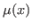
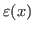
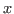
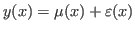

In helicopter blades design, it is a problem that computational cost should be expensive with a high-fidelity computational fluid dynamics (CFD). Efficient global optimization (EGO) which is Kriging model based exploration can be reduced the number of expensive function. However, the reduction of computational cost with CFD is not enough to practical use. Thus, multi-fidelity approach which combines high-fidelity data and low-fidelity data has possibility to improve efficiency by reduce the function of a high-fidelity CFD drastically.
In this study, hybrid Kriging model for multi-fidelity approach are proposed. In the proposed approach, radial basis function (RBF) is used to estimate a global model

. Then, a Kriging method is applied to evaluate the local deviation
(
is set of design variables). is constructed for data based on a low-fidelity evalution and is obtained based on a high-fidelity CFD. In general, the ordinary Kriging model expresses the unknown function
where is a constant. The proposed multi-fidelity approach is investigated with solving test problems. Reults by proposed method are compared with single-fidelity evaluation based surrogate model by an ordinary Kriging method and a multi-fidelity evaluations based surrogate model by co-Kriging method. According to this investigations, proposed method can be obtained better solution than existent method such as an ordinary Kriging based method and a co-Kriging method. In addition, proposed method should have the highest efficient method compared with existent methods.Finally, proposed method is employed to design optimization of helicopter blades in hovering to obtain the maximum blade efficiency that can be measured by figure of merit (FOM). Helicopter blades shape are design through changing their twist distribution. A blade element method (BEM) solver is used to obtain a low-fidelity data and the computational time per design is about 0.1 seconds. Reynolds-averaged Navier-Stokes simulation (RANS) is applied as a high fidelity CFD, which is the computational time per design is about 48 hours. The optimal shape by the proposed method could be acquired optimal design which is similar performance to the optimal design by the high-fidelity evaluation based optimization. Comparing the proposed method, an ordinary Kriging single-fidelity approach and a co-Kriging based multi-fidelity approach, the total number of high-fidelity CFD run was fewest. Thus, the proposed method which is based on hybrid model is the most efficient optimization when the optimal design shows similar performance to design by a single-fidelity based approach.